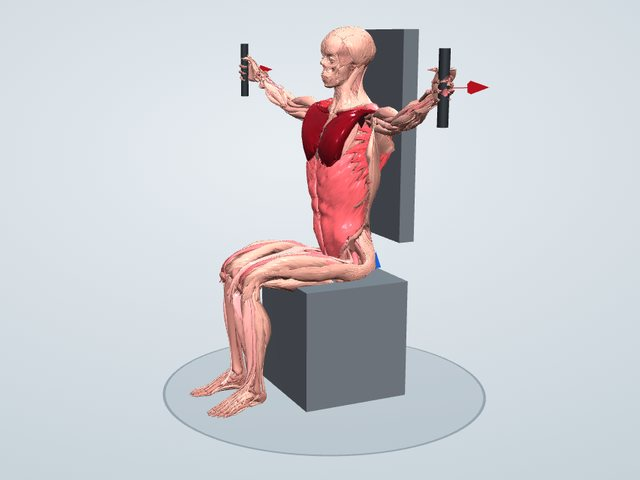

トレーニング図鑑
ペックフライ(マシン)
マシンに座り、左右に広げた腕を胸の前で閉じる胸の種目です。大胸筋を、腕を内側へ寄せる動きだけで集中して鍛えられ、肩の前(三角筋前部)も働きます。
一般に鍛えられる筋: 大胸筋・三角筋前部

鍛えられる筋のしくみ
大胸筋は胸の前を覆う筋で、上腕を体の前へ引き寄せる(水平内転)働きをします。ペックフライは腕を横から胸の前へ閉じる動きなので、ベンチプレスのように上腕三頭筋がほとんど働かず、大胸筋に負荷を集中させられます。マシンが動きの軌道を決めてくれるため、ダンベルフライよりもフォームが安定しやすく、初心者でも取り組みやすい種目です。
働く筋(3Dモデルでの計算)
重り20kgで、体重60kgの人がゆっくり動かしたときに、それぞれの筋が出せる最大の力に対して何%の力を出すかの推定です。
- 大胸筋 鎖骨部縮みながら100%
- 大胸筋 胸肋部縮みながら100%
- 三角筋 鎖骨部(前部)縮みながら100%
- 烏口腕筋縮みながら83%
- 三角筋 肩峰部(中部)伸びながら80%
- 三角筋 肩甲棘部(後部)長さを保って43%
- 僧帽筋 下行部(上部)長さを保って37%
- 僧帽筋 上行部(下部)長さを保って37%
「縮みながら」は持ち上げるときに縮んで力を出す筋、「伸びながら」は伸ばされながら力を出す筋、「長さを保って」は姿勢を支える筋です。バーは筋力の50%でいっぱいになります。
やり方
- シートの高さを、グリップ(パッド)が肩の高さになるように合わせる
- 背中を背もたれにつけ、胸を張ってグリップを握る
- ひじを軽く曲げたまま、腕で大きな円を描くように胸の前で閉じる
- 胸の前で一瞬止め、ゆっくり腕を開いて戻す
ポイント
- ひじの角度を変えずに、肩から腕全体を動かす
- 肩甲骨を寄せて、胸を張ったまま行う
- 開くときは胸が伸びるのを感じながらゆっくり
よくある間違い
- 肩が前に出て、背もたれから背中が離れる
- ひじを曲げ伸ばしして、腕の力で押してしまう
- 重すぎて開くときに勢いよく戻る
回数と重さの目安
12〜15回で限界がくる重さで2〜3セット。重さよりも、胸が縮む・伸びる感覚を大切にします。
やさしくする方法
重さを軽くする。開く範囲を小さくする。
きつくする方法
閉じたところで2秒止めて胸を強く縮める。開くときに3〜4秒かける。
注意すること
腕を開きすぎると肩の前に負担がかかります。肩に痛みがあるときは、開く範囲を体の横までにしてください。
同じ部位の種目
学習用の推定です。筋の働きは体格ややり方で変わり、実際の筋電図とは異なることがあります。痛みがあるときは無理をせず、専門家に相談してください。